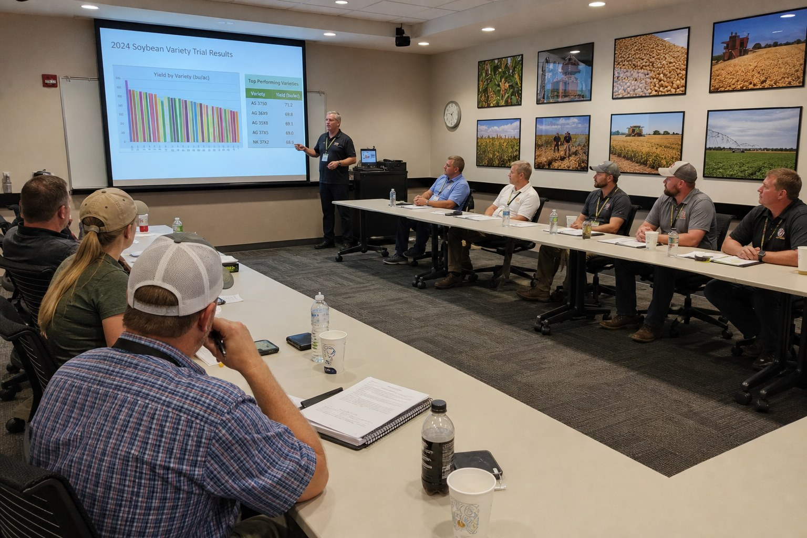
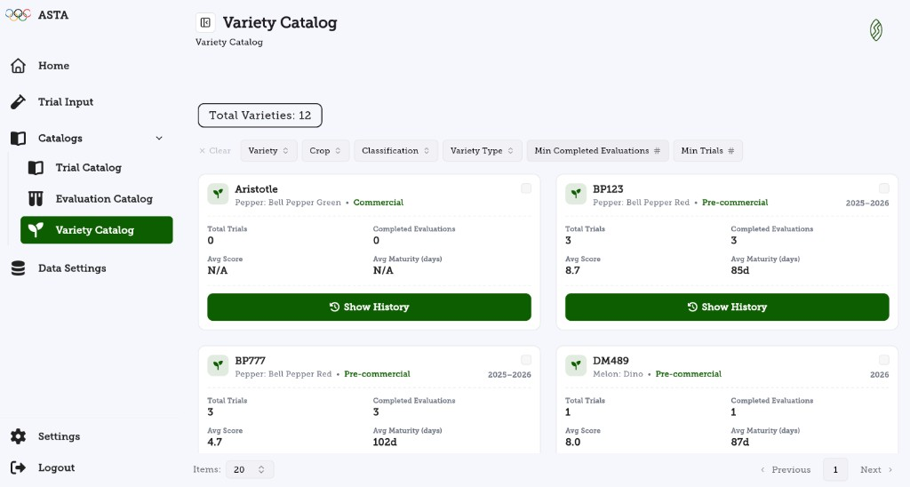
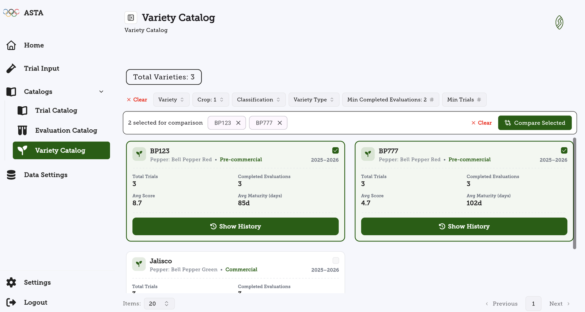
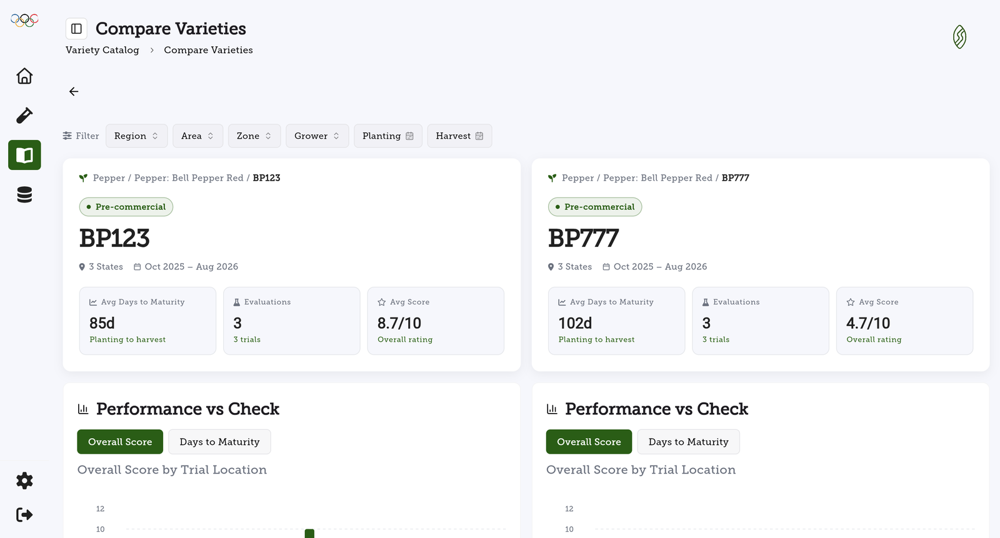
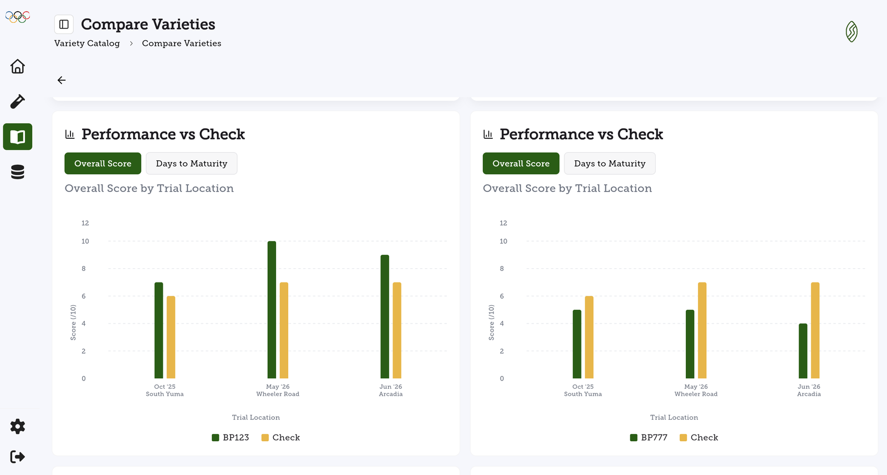
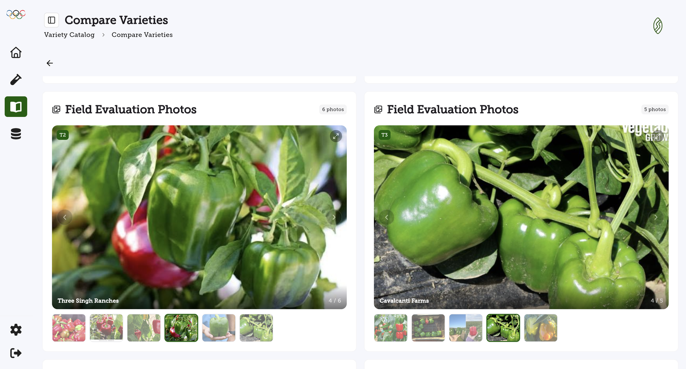
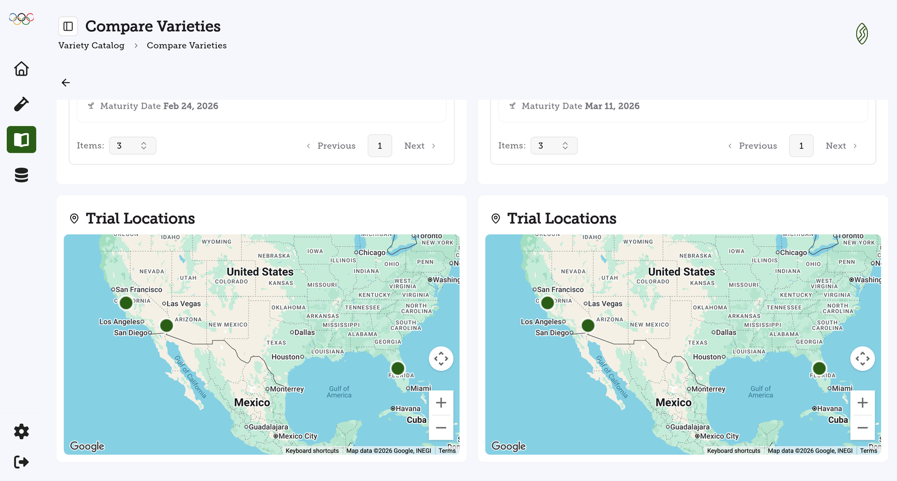

Most teams come to SeedSense for one reason: they are tired of losing trial data to notebooks, spreadsheets, and camera rolls. Collecting clean data in the field is where the journey starts. But collection alone is only half the value.
The real payoff comes when that data starts answering the question every seed company asks at the end of a season: which varieties should we sell next?
That is exactly what the new Variety Catalog was built for. It takes every trial and evaluation your team has ever recorded and turns it into a living catalog of variety performance, ready to guide your next commercial decision and arm your sales team with proof.
Your Trial Data Should Tell You What to Sell
Every variety you have ever trialed appears in the catalog with its full track record aggregated automatically. At a glance, each variety card shows total trials, completed evaluations, average score, and average days to maturity, along with its crop, classification, and commercial status.

No more digging through folders to remember how a numbered line performed two seasons ago. The catalog remembers for you, and a single click on Show History opens the complete story of any variety.
Find Your Next Product in Seconds, Not Spreadsheets
A catalog is only useful if you can slice it. Filters let you narrow hundreds of varieties down to the handful that matter for the decision in front of you:
- Crop and classification to focus on a single market, like red bell peppers
- Variety type to separate commercial lines from experimental and screening material
- Minimum trials and completed evaluations to only consider varieties with enough data behind them
Here is a quick tour of the catalog in action:
Compare Trialed Varieties Side by Side
Shortlisting is step one. Choosing a winner requires a head to head look. Select any two varieties in the catalog and hit Compare Selected.

The comparison view lines up both varieties on a single screen: average days to maturity, number of evaluations, and overall score, computed from the same trials your team ran in the field.

Below the summary, Performance vs Check charts show how each variety scored against the check at every trial location, with a toggle for overall score or days to maturity. In the example below, one candidate beat the check at every site while the other consistently fell short. That is a commercial decision made in seconds, backed by data.

And because growing conditions matter, the same filters apply to the whole comparison. Narrow both columns by region, area, zone, grower, or planting and harvest windows to answer very specific questions, like how two lines stack up for a spring desert slot with one particular grower.
Evidence Your Sales Team Can Show
Numbers close the analysis. Photos and maps close the deal. Every comparison includes the field evaluation photos your team captured during trials, so a buyer can see fruit quality and plant habit from real fields rather than a studio.

Trial location maps show exactly where each variety was grown, which makes it easy to prove local performance to a customer who wants results from their own region.

Watch the full comparison flow here:
The Full Story Behind Every Variety
Charts, photos, and maps are only part of what the catalog keeps for each variety. Open any variety and you also get:
- Variety notes: document important remarks on each variety and mention teammates, so observations stay attached to the line instead of scattered across emails and notebooks
- Trial history summary: a year by year record of every trial, with planting and harvest dates, scores, and the pros, cons, and conclusions your team recorded
- Trait results: the distribution of evaluation responses for every trait, shown as pie or bar charts, covering both rating scales and open text answers
- PDF export: share a complete variety summary, including score charts, trait results, photos, remarks, trial history, and locations, with anyone in one click
What This Means for Your Team
Faster Commercial Decisions
Aggregated scores, maturity, and trial counts surface your strongest candidates without a single spreadsheet
Answers for Specific Slots
Filter by region, grower, and planting or harvest windows to match varieties to the exact program a customer needs
Proof in the Pitch
Walk into a sales meeting with charts against the check, field photos, and local trial maps instead of claims
One Source of Truth
Every number traces back to trials and evaluations your own team recorded in the field with SeedSense
Data collection gets your trial results out of the field. The Variety Catalog puts them to work, helping you pick the right products and giving your sales team the evidence to sell them. That is the difference between software that stores data and software that grows revenue.
Ready to turn your trial data into your next sale?
See How It Works →